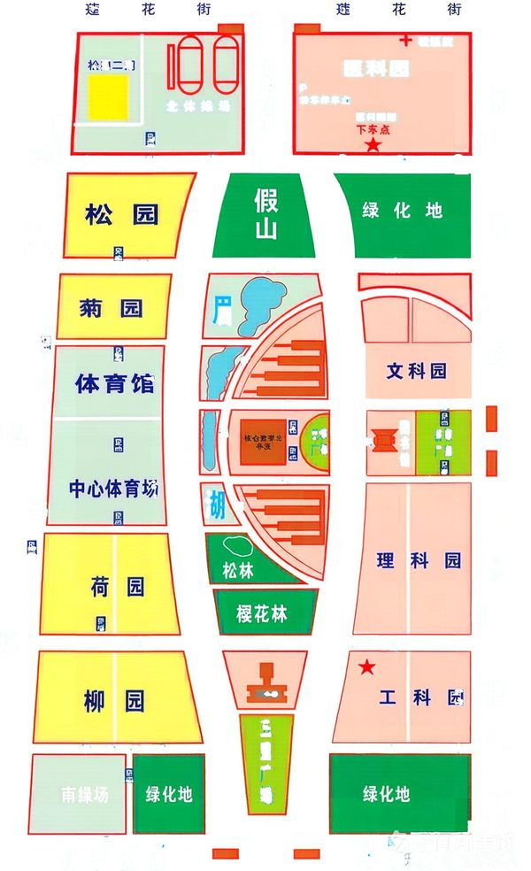

2100+行 C 语言源码VS /W3 零警告
28个校园地点含 4 个地铁口
05种出行方式步行 / 骑行 / 驾车 / 电动车 / 地铁
276对地点两两可达Python 脚本自动回归
01 / WHAT
技术亮点
不堆功能清单，只列值得在面试里展开的设计取舍。每条都能对应到源码里的一个函数或数据文件。
01邻接表图建模地点与路口共同作为顶点，边带
dist / time / metro 三个属性；校园路网是稀疏图，空间 O(n+m)，松弛时只遍历邻接链表。DATA STRUCTURE02状态扩展 Dijkstra状态从「节点」扩展为
(来路, 节点)，用叉积判断转向并加 0.5 秒罚时，消除等耗时路径在网格路网里的锯齿绕路。CORE ALGORITHM03真实路网标定沿弯曲道路描点生成折线，端点按 8px 半径吸附到已有路口、中间点生成新路口，避免路线直穿楼体；绘制时沿折线还原弯路。GEOMETRY
04地铁分层与换乘地铁边带
metro 标记，仅在地铁方式下松弛；4 个地铁口经最近校门接入校园路网，形成「校内 → 校门 → 地铁」动线。MULTI-MODAL05数据驱动与持久化14 个 UTF-8
.dat 文件驱动地图、图书与美食；写回采用「临时文件重写 + rename」，收藏与历史按学号隔离多用户。ENGINEERING06自动化回归Python 脚本断言 276 对地点两两可达、5 条地铁边与地铁口连通；BFS 检测孤立点与断头路口；全程保持 /W3 零警告编译。VERIFICATION
02 / HOW
等时路径，为什么不能随便挑一条
切换算法版本，看同一组起终点在网格路网里的两条等长路径。基础通行时间相同，差别只在转向次数。
基础通行耗时12.0 s
转向次数4 次
转弯罚时合计0.0 s
评价耗时（含罚时）12.0 s
标准 Dijkstra 只记录「到达某节点的最短时间」。两条路径评价耗时相同，先被松弛到的那条会被保留，结果可能是在网格里来回拐弯的锯齿路线。
示意数值 / 基础长度均为 520 单位 / 罚时只用于排序，不改变真实通行时间
03 / VIEW
界面与底图
程序用 EasyX 绘制 1020×700 窗口，批量绘制消除闪烁，中文统一走宽字符绘制函数。

04 / BUILD
结构与数据
三层结构通过函数接口解耦；数据文件与可执行文件必须同级，程序启动时加载并建图。
LAYER 01
界面交互层
主循环分发鼠标 / 键盘事件：地图拖拽、地点拾取、按钮悬停、弹窗输入。
LAYER 02
业务功能层
搜索、导航、探索、收藏、账号、图书、美食、路网质检各自成模块。
LAYER 03
数据存储层
UTF-8 文本以「|」分隔，临时文件重写后 rename；按学号隔离用户数据。
| 核心文件 | 作用 |
|---|---|
| gui.cpp | 全部源码，约 2100 行 |
| places.dat | 28 个地点：编号 / 名称 / 类型 / 热度 |
| coords.dat | 地点在底图上的标定坐标 |
| junctions.dat | 道路路口坐标 |
| roads_custom.dat | 沿真实道路描出的折线，防止路线穿楼 |
| roads.dat | 地点直达关系与距离 / 耗时 |
| place_junctions.dat | 地点与最近路口的关联 |
| books.dat / foods.dat | 70 本图书、49 条园区美食 |
| map.jpg | 校园实景底图 |
05 / COPY
项目经历文案
按 BOSS 直聘「项目经历」字段整理，点击复制后可直接粘贴；投不同岗位时按下方提示微调。
项目描述：针对校园内部步行路网不被主流导航覆盖的问题，以郑州大学主校区实景地图为背景，将 28 个地点与道路路口建模为带权无向图，实现点击式路线规划、模糊搜索、多用户收藏/历史、图书借阅等模块，交付可独立运行程序与完整设计报告（2100+ 行源码）。 1. 用邻接表建图（边含距离/耗时/地铁标记），实现按时间加权的 Dijkstra 最快路径；将状态扩展为「(来路, 节点)」并引入转弯罚时，解决等耗时路径锯齿绕路问题，支持步行/骑行/驾车/电动车/地铁 5 种方式。 2. 沿真实道路做折线标定 + 8px 路口吸附，避免路线直穿楼体；为 4 个地铁口挂校门中转边，把校内动线接入 5 段地铁线路。 3. 设计 14 个 UTF-8 数据文件与「临时文件重写」安全写回，按学号隔离多用户收藏、历史、借阅数据；统一宽字符绘制解决中文乱码。 4. 编写 Python 脚本自动回归路网连通性（276 对地点两两可达），配合 BFS 检测孤立点/断头路口，保持 VS /W3 零警告编译。 技术栈：C 语言、EasyX、邻接表、Dijkstra（状态扩展）、BFS、UTF-8 文件持久化、Visual Studio、Python 回归脚本。
投 C/C++、算法岗：放大第 1、4 条。投 Java 后端：突出第 3 条的分层与持久化，并建议补一个 Spring Boot 接口版再写进简历。
06 / FILES
源码与文档
可执行文件需与 .dat 数据文件、map.jpg 放在同一目录才能运行。